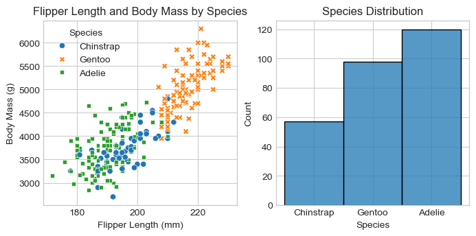

import pandas as pd
import numpy as np
from matplotlib import pyplot as plt
import seaborn as sns
import warnings
warnings.filterwarnings("ignore")
np.set_printoptions(precision = 3)
plt.style.use('seaborn-v0_8-whitegrid')
from sklearn.preprocessing import LabelEncoderA Classification Exercise of Palmer’s Penguins
Abstract
The aim of this blog post is to explore the relationships between predictor variables and the species of the penguins found in the famous Palmer’s Penguins dataset. The analysis was conducted through a series of data preparation, exploratory data analysis and visualization, feature selection, and finally model training and testing. These processes coincide to form a model that boasts perfect prediction accuracy for penguin species in the testing data.
Data Preparation
We’ll begin by reading in the data and doing some data preparation.
train_url = "https://raw.githubusercontent.com/PhilChodrow/ml-notes/main/data/palmer-penguins/train.csv"
train = pd.read_csv(train_url)
train["Species"] = train["Species"].str.split().str.get(0)le = LabelEncoder()
le.fit(train["Species"])
def prepare_data(df):
df = df.drop(["studyName", "Sample Number", "Individual ID", "Date Egg", "Comments", "Region"], axis = 1)
df = df[df["Sex"] != "."]
df = df.dropna()
y = le.transform(df["Species"])
df = df.drop(["Species"], axis = 1)
df = pd.get_dummies(df)
return df, y
X_train, y_train = prepare_data(train)Let’s view the dataset for better understanding.
X_train| Culmen Length (mm) | Culmen Depth (mm) | Flipper Length (mm) | Body Mass (g) | Delta 15 N (o/oo) | Delta 13 C (o/oo) | Island_Biscoe | Island_Dream | Island_Torgersen | Stage_Adult, 1 Egg Stage | Clutch Completion_No | Clutch Completion_Yes | Sex_FEMALE | Sex_MALE | |
|---|---|---|---|---|---|---|---|---|---|---|---|---|---|---|
| 0 | 40.9 | 16.6 | 187.0 | 3200.0 | 9.08458 | -24.54903 | False | True | False | True | False | True | True | False |
| 1 | 49.0 | 19.5 | 210.0 | 3950.0 | 9.53262 | -24.66867 | False | True | False | True | False | True | False | True |
| 2 | 50.0 | 15.2 | 218.0 | 5700.0 | 8.25540 | -25.40075 | True | False | False | True | False | True | False | True |
| 3 | 45.8 | 14.6 | 210.0 | 4200.0 | 7.79958 | -25.62618 | True | False | False | True | False | True | True | False |
| 4 | 51.0 | 18.8 | 203.0 | 4100.0 | 9.23196 | -24.17282 | False | True | False | True | False | True | False | True |
| ... | ... | ... | ... | ... | ... | ... | ... | ... | ... | ... | ... | ... | ... | ... |
| 270 | 51.1 | 16.5 | 225.0 | 5250.0 | 8.20660 | -26.36863 | True | False | False | True | False | True | False | True |
| 271 | 35.9 | 16.6 | 190.0 | 3050.0 | 8.47781 | -26.07821 | False | False | True | True | True | False | True | False |
| 272 | 39.5 | 17.8 | 188.0 | 3300.0 | 9.66523 | -25.06020 | False | True | False | True | False | True | True | False |
| 273 | 36.7 | 19.3 | 193.0 | 3450.0 | 8.76651 | -25.32426 | False | False | True | True | False | True | True | False |
| 274 | 42.4 | 17.3 | 181.0 | 3600.0 | 9.35138 | -24.68790 | False | True | False | True | False | True | True | False |
256 rows × 14 columns
Data Aggregation and Visualization
view_cols = ["Culmen Length (mm)", "Culmen Depth (mm)", "Flipper Length (mm)", "Body Mass (g)"]
train.groupby("Species")[view_cols].aggregate(["mean", "median", "min", "max"]).reset_index()| Species | Culmen Length (mm) | Culmen Depth (mm) | Flipper Length (mm) | Body Mass (g) | |||||||||||||
|---|---|---|---|---|---|---|---|---|---|---|---|---|---|---|---|---|---|
| mean | median | min | max | mean | median | min | max | mean | median | min | max | mean | median | min | max | ||
| 0 | Adelie | 38.970588 | 38.9 | 34.0 | 46.0 | 18.409244 | 18.5 | 15.9 | 21.5 | 190.084034 | 190.0 | 172.0 | 210.0 | 3718.487395 | 3700.0 | 2850.0 | 4725.0 |
| 1 | Chinstrap | 48.826316 | 49.3 | 40.9 | 58.0 | 18.366667 | 18.3 | 16.4 | 20.8 | 196.000000 | 196.0 | 178.0 | 212.0 | 3743.421053 | 3700.0 | 2700.0 | 4800.0 |
| 2 | Gentoo | 47.073196 | 46.5 | 40.9 | 55.9 | 14.914433 | 14.8 | 13.1 | 17.3 | 216.752577 | 216.0 | 207.0 | 230.0 | 5039.948454 | 5000.0 | 3950.0 | 6300.0 |
This data table view shows the mean, median, min, and max of quantitative columns in the dataset, barring those relating to “Delta”. This initial exploration of the data reveal some clear differences in the measurements taken on the penguins across groups. Most notably, penguins of the Gentoo species are on average 1300g heavier than any of the other species.
fig, ax = plt.subplots(1, 2, figsize = (8, 3.5))
p1 = sns.scatterplot(train, x = "Flipper Length (mm)", y = "Body Mass (g)", hue = "Species", style = "Species", ax = ax[0]).set_title("Flipper Length and Body Mass by Species")
p2 = sns.histplot(train, x = "Species", ax = ax[1]).set_title("Species Distribution")
These two graphics help to visualize potential relationships present in the data. We do not see a clear separation of the species groups while viewing Body Mass and Flipper Length. The histogram of the species uncovers the distribution of the different species in the dataset. There are more Adelia samples in the training data than any other species.
From the exploratory analysis above, we can move forward to the model selection process. Below contains methodology to train and score Logistic Regression and Support Vector Machines models via cross-validation with most combinations of quantitative and qualitative predictor variables.
Model and Feature Selection
from itertools import combinations
from sklearn.linear_model import LogisticRegression
from sklearn.svm import SVC
from sklearn.model_selection import cross_val_score
all_qual_cols = X_train.select_dtypes(include='bool')
all_quant_cols = X_train.select_dtypes(include=np.number)
best_LR_score = 0
best_SVM_score = 0
best_LR_cols = []
best_SVM_cols = []
for qual in all_qual_cols:
qual_cols = [col for col in X_train.columns if qual in col ]
for pair in combinations(all_quant_cols, 2):
cols = qual_cols + list(pair)
LR = LogisticRegression()
LR.fit(X_train[cols], y_train)
SVM = SVC()
SVM.fit(X_train[cols], y_train)
LR_score = cross_val_score(LR, X_train[cols], y_train, cv = 5).mean()
SVM_score = cross_val_score(SVM, X_train[cols], y_train, cv = 5).mean()
if LR_score > best_LR_score:
best_LR_cols = cols
best_LR_score = LR_score
if SVM_score > best_SVM_score:
best_SVM_cols = cols
best_SVM_score = SVM_scoreprint("Best LR Score: ", best_LR_score,
"\n Best SVM Score: ", best_SVM_score)Best LR Score: 0.9922322775263952
Best SVM Score: 0.890573152337858print("Best LR Columns: ", best_LR_cols)Best LR Columns: ['Island_Dream', 'Culmen Length (mm)', 'Culmen Depth (mm)']From this model selection process, we can conclude that the logistic regression model process is favorable for this prediction task as it boasts a mean accuracy over 5 cross-validation folds of \(0.9922\). We will move forward with the best columns associated with the greater accuracy of the logistic regression model, being ‘Island’, ‘Culmen Length’, ‘Culmen Depth’. We will use all three variables derived from island association.
selected_cols = ["Culmen Length (mm)",
"Culmen Depth (mm)",
"Island_Dream",
"Island_Biscoe",
"Island_Torgersen"]
LR = LogisticRegression()
LR.fit(X_train[selected_cols], y_train)
scores = cross_val_score(LR, X_train[selected_cols], y_train, cv = 5)
scoresarray([0.981, 1. , 1. , 1. , 1. ])Using all selected features, including island association variables, the Logistic Regression model nearly boasts perfect accuracy on the training data sample. Let’s see how it performs on the testing data.
test_url = "https://raw.githubusercontent.com/PhilChodrow/ml-notes/main/data/palmer-penguins/test.csv"
test = pd.read_csv(test_url)
test["Species"] = test["Species"].str.split().str.get(0)
X_test, y_test = prepare_data(test)
LR.score(X_test[selected_cols], y_test)1.0Wow! A perfect score! Exquisite modeling! Let’s visualize our model findings.
Final Model Visualizations
from matplotlib.patches import Patch
def plot_regions(model, X, y):
x0 = X[X.columns[0]]
x1 = X[X.columns[1]]
qual_features = X.columns[2:]
fig, axarr = plt.subplots(1, len(qual_features), figsize = (7, 3))
# create a grid
grid_x = np.linspace(x0.min(),x0.max(),501)
grid_y = np.linspace(x1.min(),x1.max(),501)
xx, yy = np.meshgrid(grid_x, grid_y)
XX = xx.ravel()
YY = yy.ravel()
for i in range(len(qual_features)):
XY = pd.DataFrame({
X.columns[0] : XX,
X.columns[1] : YY
})
for j in qual_features:
XY[j] = 0
XY[qual_features[i]] = 1
p = model.predict(XY)
p = p.reshape(xx.shape)
# use contour plot to visualize the predictions
axarr[i].contourf(xx, yy, p, cmap = "jet", alpha = 0.2, vmin = 0, vmax = 2)
ix = X[qual_features[i]] == 1
# plot the data
axarr[i].scatter(x0[ix], x1[ix], c = y[ix], cmap = "jet", vmin = 0, vmax = 2)
axarr[i].set(xlabel = X.columns[0],
ylabel = X.columns[1],
title = qual_features[i])
patches = []
for color, spec in zip(["red", "green", "blue"], ["Adelie", "Chinstrap", "Gentoo"]):
patches.append(Patch(color = color, label = spec))
plt.legend(title = "Species", handles = patches, loc = "best")
plt.tight_layout()plot_regions(LR, X_train[selected_cols], y_train)The plot_regions() function provided to us allows us to visualize the model’s decisions based on the selected features. The view is faceted by the dummy variables previously created for the Island column.
Confusion Matrix
from sklearn.metrics import confusion_matrix
y_test_pred = LR.predict(X_test[selected_cols])
C = confusion_matrix(y_test, y_test_pred)
Carray([[31, 0, 0],
[ 0, 11, 0],
[ 0, 0, 26]])This confusion matrix allows us to view in which accuracy categories our model excels and which it underperforms. Fortunately, the model and feature selection processes result in perfect accuracy, in which the model does not make any wrong species predictions for the test data.
Discussion
This modeling process resulted in finding the favorable prediction model and corresponding features for penguin species prediction in the Palmer’s Penguin’s dataset. From this exercise we have learned that the most important predictors for species are Island Association, Culmen Length, and Culmen Depth. It is intriguing how, across species, the culmen’s vary enough in length and depth to very accurately make a prediction. Based on the initial data exploration, I would have guessed that Body Mass would have been a more significant predictor, as we see great differences across groups. This goes to show that the numbers may not always be as they appear initially.